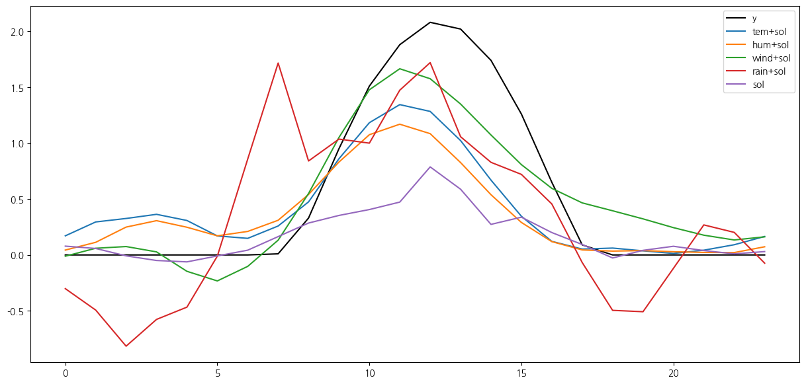
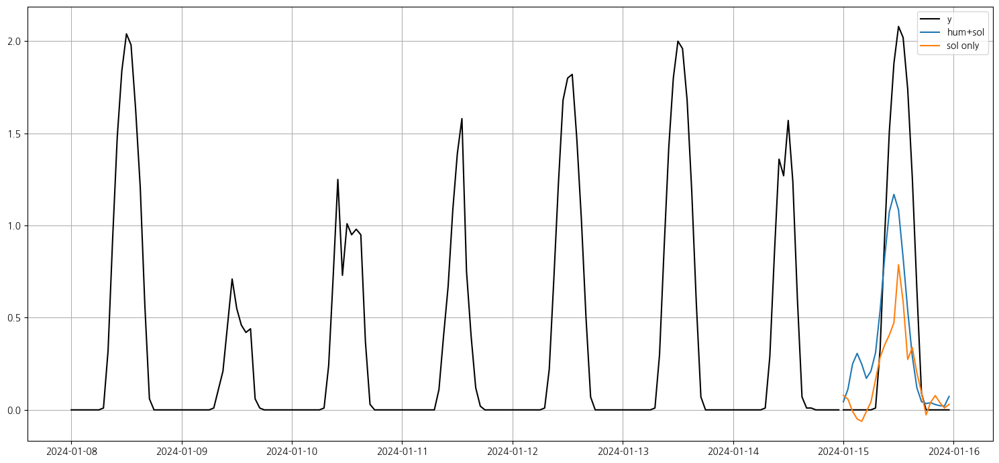

import pandas as pd
import matplotlib.pyplot as pltwt= pd.read_csv("weather2024.csv")wt| 일시 | 기온 | 강수량 | 풍속 | 습도 | 일사 | |
|---|---|---|---|---|---|---|
| 0 | 2024-01-01 01:00 | 3.8 | 0.0 | 1.5 | 80 | 0.0 |
| 1 | 2024-01-01 02:00 | 3.9 | 0.0 | 0.2 | 79 | 0.0 |
| 2 | 2024-01-01 03:00 | 3.5 | 0.0 | 0.4 | 84 | 0.0 |
| 3 | 2024-01-01 04:00 | 1.9 | 0.0 | 1.1 | 92 | 0.0 |
| 4 | 2024-01-01 05:00 | 1.4 | 0.0 | 1.5 | 94 | 0.0 |
| ... | ... | ... | ... | ... | ... | ... |
| 8755 | 2024-12-30 20:00 | 7.6 | 0.0 | 1.4 | 71 | 0.0 |
| 8756 | 2024-12-30 21:00 | 7.5 | 0.0 | 1.7 | 69 | 0.0 |
| 8757 | 2024-12-30 22:00 | 7.2 | 0.0 | 1.2 | 70 | 0.0 |
| 8758 | 2024-12-30 23:00 | 7.2 | 0.0 | 1.7 | 71 | 0.0 |
| 8759 | 2024-12-31 00:00 | 7.4 | 0.0 | 2.8 | 70 | 0.0 |
8760 rows × 6 columns
wt.columns = ['date', 'tem', 'rain', 'wind', 'hum', 'sol']- 전체 기간 시도표
for i in range(5):
wt.iloc[:,[i+1]].plot(figsize=(15, 3));- 첫 1주일 시도표
for i in range(5):
wt.iloc[:24*7,[i+1]].plot(figsize=(15, 3));from statsmodels.tsa.seasonal import seasonal_decompose
#ts = pd.Series(dff.iloc[:24*7,[0+1]].values, index=pd.date_range(start='2024-01-01', periods=24, freq='H'))
# 분해 수행 (Additive 모델, 주기성 주기=24시간)
result = seasonal_decompose(wt.iloc[:24*14,[0+1]].values, model='additive', period=24)
# 시각화
result.plot()
#plt.suptitle("시계열 분해 결과 (추세 + 계절 + 잡음)")
plt.tight_layout()
plt.show()from statsmodels.graphics.tsaplots import plot_acf, plot_pacf
ts=wt.iloc[:24*14,[0+1]].values
fig, axes = plt.subplots(1, 2, figsize=(14, 4))
plot_acf(ts, lags=50, ax=axes[0])
axes[0].set_title("ACF")
plot_pacf(ts, lags=50, ax=axes[1])
axes[1].set_title("PACF")
plt.tight_layout()
plt.show()
wt.iloc[:,1:].corr()| tem | rain | wind | hum | sol | |
|---|---|---|---|---|---|
| tem | 1.000000 | 0.051619 | 0.016475 | -0.056472 | 0.348940 |
| rain | 0.051619 | 1.000000 | 0.045720 | 0.184801 | -0.070628 |
| wind | 0.016475 | 0.045720 | 1.000000 | -0.311978 | 0.284515 |
| hum | -0.056472 | 0.184801 | -0.311978 | 1.000000 | -0.620501 |
| sol | 0.348940 | -0.070628 | 0.284515 | -0.620501 | 1.000000 |
VAR 모형에 적합
- \(X\) : y의 과거값 및 외생변수, 길이는 24*14
- \(y\) : 예측하고자 하는 일사량, 길이는 24
- 온도와 일사량
X = wt.iloc[:24*14,[1,-1]]
y = wt.iloc[24*14:24*15,1:]from statsmodels.tsa.api import VAR
from sklearn.metrics import mean_squared_error
# 데이터: y, x1~x4가 있는 시계열 데이터프레임
# 인덱스는 datetime이어야 함
# 1. 정상성 검사 및 필요시 차분 (여기선 생략, 필요시 추가해줘)
# 2. VAR 모형 적합
model = VAR(X)
# 3. 시차 선택
lag_result = model.select_order(maxlags=48)
print("AIC 기준 최적 시차:", lag_result.selected_orders['aic'])
lag = lag_result.selected_orders['aic']
# 4. VAR 모델 적합
results = model.fit(lag)
#print(results.summary())AIC 기준 최적 시차: 21n_forecast = 24
forecast_input = X.values[-lag:] # 최근 lag만큼의 데이터 사용
forecast1 = results.forecast(y=forecast_input, steps=n_forecast)- 습도와 일사량
X = wt.iloc[:24*14,[-2,-1]]
#y = wt.iloc[24*7:24*8,1:]
model = VAR(X)
-0
# 3. 시차 선택
lag_result = model.select_order(maxlags=24)
print("AIC 기준 최적 시차:", lag_result.selected_orders['aic'])
lag = lag_result.selected_orders['aic']
# 4. VAR 모델 적합
results = model.fit(lag)
results.summary()AIC 기준 최적 시차: 21 Summary of Regression Results
==================================
Model: VAR
Method: OLS
Date: Tue, 01, Apr, 2025
Time: 07:26:53
--------------------------------------------------------------------
No. of Equations: 2.00000 BIC: 0.0867873
Nobs: 315.000 HQIC: -0.528393
Log likelihood: -660.240 FPE: 0.392863
AIC: -0.937725 Det(Omega_mle): 0.304156
--------------------------------------------------------------------
Results for equation hum
==========================================================================
coefficient std. error t-stat prob
--------------------------------------------------------------------------
const 12.877262 3.048607 4.224 0.000
L1.hum 1.034009 0.064842 15.947 0.000
L1.sol -6.288329 1.841606 -3.415 0.001
L2.hum -0.085306 0.091430 -0.933 0.351
L2.sol 2.476996 2.761977 0.897 0.370
L3.hum -0.105987 0.091506 -1.158 0.247
L3.sol 4.269964 2.810271 1.519 0.129
L4.hum 0.104119 0.091715 1.135 0.256
L4.sol -3.066122 2.814244 -1.090 0.276
L5.hum 0.020022 0.091322 0.219 0.826
L5.sol 0.726784 2.790890 0.260 0.795
L6.hum -0.154890 0.090401 -1.713 0.087
L6.sol -1.001202 2.651443 -0.378 0.706
L7.hum 0.063325 0.090179 0.702 0.483
L7.sol -1.789725 2.574931 -0.695 0.487
L8.hum 0.013035 0.090204 0.145 0.885
L8.sol 2.753985 2.559143 1.076 0.282
L9.hum -0.079469 0.090351 -0.880 0.379
L9.sol -2.534441 2.565794 -0.988 0.323
L10.hum -0.021562 0.090809 -0.237 0.812
L10.sol 0.092242 2.566511 0.036 0.971
L11.hum 0.101221 0.090510 1.118 0.263
L11.sol 0.270904 2.559397 0.106 0.916
L12.hum -0.044597 0.090874 -0.491 0.624
L12.sol -0.931457 2.592624 -0.359 0.719
L13.hum -0.049559 0.090879 -0.545 0.586
L13.sol 0.019081 2.638249 0.007 0.994
L14.hum 0.071637 0.090692 0.790 0.430
L14.sol -1.801443 2.654979 -0.679 0.497
L15.hum -0.159492 0.091383 -1.745 0.081
L15.sol -1.397162 2.654903 -0.526 0.599
L16.hum 0.130378 0.091520 1.425 0.154
L16.sol 3.921220 2.642805 1.484 0.138
L17.hum 0.125505 0.091874 1.366 0.172
L17.sol -0.658568 2.657127 -0.248 0.804
L18.hum -0.039232 0.092146 -0.426 0.670
L18.sol 0.307973 2.647252 0.116 0.907
L19.hum -0.033336 0.091821 -0.363 0.717
L19.sol -2.210109 2.647698 -0.835 0.404
L20.hum -0.091010 0.091946 -0.990 0.322
L20.sol 1.522105 2.596331 0.586 0.558
L21.hum 0.060905 0.065948 0.924 0.356
L21.sol -3.586148 1.718873 -2.086 0.037
==========================================================================
Results for equation sol
==========================================================================
coefficient std. error t-stat prob
--------------------------------------------------------------------------
const -0.013084 0.108455 -0.121 0.904
L1.hum -0.004107 0.002307 -1.780 0.075
L1.sol 1.190143 0.065516 18.166 0.000
L2.hum 0.001161 0.003253 0.357 0.721
L2.sol -0.319998 0.098258 -3.257 0.001
L3.hum 0.003093 0.003255 0.950 0.342
L3.sol -0.013066 0.099976 -0.131 0.896
L4.hum -0.002233 0.003263 -0.685 0.494
L4.sol -0.105982 0.100118 -1.059 0.290
L5.hum 0.000845 0.003249 0.260 0.795
L5.sol 0.007535 0.099287 0.076 0.940
L6.hum 0.004978 0.003216 1.548 0.122
L6.sol -0.002949 0.094326 -0.031 0.975
L7.hum -0.002640 0.003208 -0.823 0.410
L7.sol 0.000148 0.091604 0.002 0.999
L8.hum -0.003149 0.003209 -0.981 0.326
L8.sol 0.058175 0.091042 0.639 0.523
L9.hum 0.002759 0.003214 0.858 0.391
L9.sol 0.043017 0.091279 0.471 0.637
L10.hum -0.000294 0.003231 -0.091 0.927
L10.sol -0.032885 0.091305 -0.360 0.719
L11.hum -0.000207 0.003220 -0.064 0.949
L11.sol -0.080112 0.091052 -0.880 0.379
L12.hum 0.001996 0.003233 0.617 0.537
L12.sol -0.010646 0.092234 -0.115 0.908
L13.hum 0.002650 0.003233 0.820 0.412
L13.sol 0.054054 0.093857 0.576 0.565
L14.hum -0.007051 0.003226 -2.185 0.029
L14.sol 0.042851 0.094452 0.454 0.650
L15.hum 0.004732 0.003251 1.456 0.146
L15.sol 0.005935 0.094449 0.063 0.950
L16.hum -0.003122 0.003256 -0.959 0.338
L16.sol -0.081783 0.094019 -0.870 0.384
L17.hum 0.000985 0.003268 0.301 0.763
L17.sol 0.018094 0.094528 0.191 0.848
L18.hum -0.000796 0.003278 -0.243 0.808
L18.sol -0.070061 0.094177 -0.744 0.457
L19.hum 0.003162 0.003267 0.968 0.333
L19.sol -0.020653 0.094193 -0.219 0.826
L20.hum -0.002413 0.003271 -0.738 0.461
L20.sol 0.080876 0.092365 0.876 0.381
L21.hum 0.000457 0.002346 0.195 0.846
L21.sol 0.107119 0.061150 1.752 0.080
==========================================================================
Correlation matrix of residuals
hum sol
hum 1.000000 -0.387709
sol -0.387709 1.000000
n_forecast = 24
forecast_input = X.values[-lag:] # 최근 lag만큼의 데이터 사용
forecast2 = results.forecast(y=forecast_input, steps=n_forecast)- 풍속과 일사량
X = wt.iloc[:24*14,[-3,-1]]
#y = wt.iloc[24*7:24*8,1:]
model = VAR(X)
# 3. 시차 선택
lag_result = model.select_order(maxlags=24)
print("AIC 기준 최적 시차:", lag_result.selected_orders['aic'])
lag = lag_result.selected_orders['aic']
# 4. VAR 모델 적합
results = model.fit(lag)
results.summary()
n_forecast = 24
forecast_input = X.values[-lag:] # 최근 lag만큼의 데이터 사용
forecast2_ = results.forecast(y=forecast_input, steps=n_forecast)AIC 기준 최적 시차: 21- 강수량과 일사량
X = wt.iloc[:24*14,[-4,-1]]
#y = wt.iloc[24*7:24*8,1:]
model = VAR(X)
# 3. 시차 선택
lag_result = model.select_order(maxlags=24)
print("AIC 기준 최적 시차:", lag_result.selected_orders['aic'])
lag = lag_result.selected_orders['aic']
# 4. VAR 모델 적합
results = model.fit(lag)
results.summary()
n_forecast = 24
forecast_input = X.values[-lag:] # 최근 lag만큼의 데이터 사용
forecast3_ = results.forecast(y=forecast_input, steps=n_forecast)AIC 기준 최적 시차: 20- AR 모형 일사량만 이용
from statsmodels.tsa.ar_model import AutoReg
# 예시: y 시계열 데이터프레임 (datetime index 권장)
# df = pd.read_csv("your_data.csv", index_col=0, parse_dates=True)
# y = df['y']
y_ = wt.iloc[:24*14,[-1]]# 시계열 형태로 가져오기
# 1. 시차(p) 설정 또는 자동 선택
p = 24 # 최근 24시간을 기반으로 다음을 예측한다고 가정
# 2. AR 모형 적합
model = AutoReg(y_, lags=p, old_names=False)
results = model.fit()
# 3. 다음 24시간 예측
forecast3 = results.predict(start=len(y), end=len(y)+23)print('온도, 일사량',mean_squared_error(y['sol'].values,forecast1[:,1]))
print('습도, 일사량',mean_squared_error(y['sol'].values,forecast2[:,1]))
print('풍속, 일사량',mean_squared_error(y['sol'].values,forecast2_[:,1]))
print('강수량, 일사량',mean_squared_error(y['sol'].values,forecast3_[:,1]))
print('일사량',mean_squared_error(y['sol'].values,forecast3))
plt.figure(figsize = (15,7))
plt.plot(y['sol'].values, label = 'y',color = 'black')
plt.plot(forecast1[:,1],label = 'tem+sol')
plt.plot(forecast2[:,1],label = 'hum+sol')
plt.plot(forecast2_[:,1],label = 'wind+sol')
plt.plot(forecast3_[:,1],label = 'rain+sol')
plt.plot(forecast3.values,label = 'sol')
plt.legend()
plt.show()온도, 일사량 0.20502706789905156
습도, 일사량 0.2600785050783011
풍속, 일사량 0.08792570082191763
강수량, 일사량 0.3652957905544259
일사량 0.4390186400449338
import pandas as pd
import matplotlib.pyplot as plt
# 0. y_ 인덱스가 숫자면 → datetime 인덱스로 바꿔주기
if not isinstance(y_.index[0], pd.Timestamp):
y_.index = pd.date_range(start='2024-01-01', periods=len(y_), freq='h')
# 1. 예측 구간 인덱스 생성
forecast_index = pd.date_range(start=y_.index[-1] + pd.Timedelta(hours=1), periods=24, freq='h')
# 2. 예측값 시리즈화
sol = pd.Series(y['sol'].values, index=forecast_index)
tem_sol = pd.Series(forecast1[:, 1], index=forecast_index)
hum_sol = pd.Series(forecast2[:, 1], index=forecast_index)
sol_only = pd.Series(forecast3.values.flatten(), index=forecast_index)
# 3. 플롯
plt.figure(figsize=(15, 7))
plt.plot(y_[-24*7:],color = 'black')
plt.plot(sol, label = 'y',color = 'black')
#plt.plot(tem_sol, label='tem+sol')
plt.plot(hum_sol, label='hum+sol')
plt.plot(sol_only, label='sol only')
plt.legend()
#plt.title("과거 + 예측 시계열")
#plt.xlabel("시간")
plt.grid(True)
plt.tight_layout()
plt.show()
- Granger 인과검정
- 각 변수 상관관계
- 풀모형에서 Granger 인과검정
- \(H_0\) : 외생변수 전체는 Granger 인과하지 않다
- \(H_1\) : 외생변수 중 어떤 하나 이상의 변수가 Granger 인과하다
from statsmodels.tsa.api import VAR
# 1. 전체 시계열 데이터 사용 (예: df = ['y', 'x1', 'x2', 'x3', 'x4'])
X = wt.iloc[:24*14,1:]
model = VAR(X)
results = model.fit(maxlags=24,ic='aic') # 자동 시차 선택
gc_test = results.test_causality(caused='sol', causing=['tem', 'rain', 'wind', 'hum'], kind='f')
# 3. 결과 요약
print(gc_test.summary())Granger causality F-test. H_0: ['tem', 'rain', 'wind', 'hum'] do not Granger-cause sol. Conclusion: reject H_0 at 5% significance level.
================================================
Test statistic Critical value p-value df
------------------------------------------------
2.683 1.758 0.001 (12, 1585)
------------------------------------------------X = wt.iloc[:24*14,[1,-1]]
model = VAR(X)
results = model.fit(maxlags=24,ic='aic')
gc_test = results.test_causality(caused='sol', causing=['tem'], kind='f')
# 3. 결과 요약
print(gc_test.summary())Granger causality F-test. H_0: tem does not Granger-cause sol. Conclusion: reject H_0 at 5% significance level.
===============================================
Test statistic Critical value p-value df
-----------------------------------------------
2.323 1.590 0.001 (20, 550)
-----------------------------------------------X = wt.iloc[:24*14,[2,-1]]
model = VAR(X)
results = model.fit(maxlags=24,ic='aic')
gc_test = results.test_causality(caused='sol', causing=['rain'], kind='f')
# 3. 결과 요약
print(gc_test.summary())Granger causality F-test. H_0: rain does not Granger-cause sol. Conclusion: reject H_0 at 5% significance level.
===============================================
Test statistic Critical value p-value df
-----------------------------------------------
3.284 1.590 0.000 (20, 550)
-----------------------------------------------X = wt.iloc[:24*14,[3,-1]]
model = VAR(X)
results = model.fit(maxlags=24,ic='aic')
gc_test = results.test_causality(caused='sol', causing=['wind'], kind='f')
# 3. 결과 요약
print(gc_test.summary())Granger causality F-test. H_0: wind does not Granger-cause sol. Conclusion: fail to reject H_0 at 5% significance level.
===============================================
Test statistic Critical value p-value df
-----------------------------------------------
0.8684 1.575 0.633 (21, 544)
-----------------------------------------------X = wt.iloc[:24*14,[4,-1]]
model = VAR(X)
results = model.fit(maxlags=24,ic='aic')
gc_test = results.test_causality(caused='sol', causing=['hum'], kind='f')
# 3. 결과 요약
print(gc_test.summary())Granger causality F-test. H_0: hum does not Granger-cause sol. Conclusion: fail to reject H_0 at 5% significance level.
===============================================
Test statistic Critical value p-value df
-----------------------------------------------
0.9374 1.575 0.542 (21, 544)
-----------------------------------------------fig, ax = plt.subplots(5,1,figsize=(12,10))
for i in range(5):
ax[i].plot(wt.iloc[:24*14,i+1])